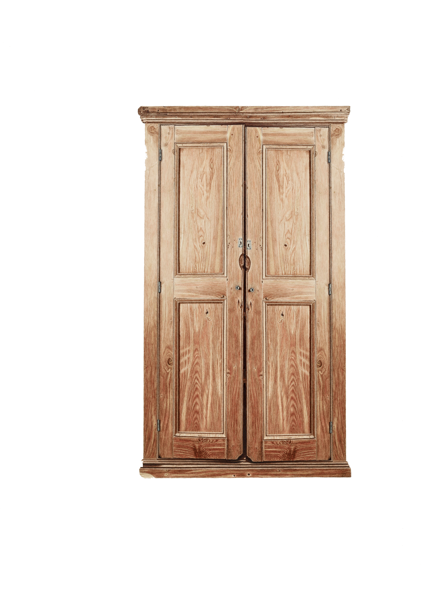

sixieme chat pitre §
le visage ne lui senblait pas familier.
quant il regarda de plus pret, en fait le visage le lui semble familier.
- votre visgae me semble familier.
-cest pârce queue mon visage est tres familieer.
-ha d'acord cela me conviens come explication, je vais donc me couché dans mon lit.
il ala se coucher dans son lit.
le lendemain, ile ne se passa rien d'interesant a raconter.
le jour d'encore apres, paul se reveila tres conten.
il salua le visage familier dans son placar avant daler au travail :
- bonjour.
- bonjour.
en parntat au travail, deux problemes se posa a lui : 1 : il a oublier son objet inportant : le portefeuile2
:
il est en retar au travail : -je suis en retard pour le travail,.
en arive au travaile, il fait chaud. paul enleva son mentau et son bonet. il croisait simon simon /:
-bonjour.
-bonjour.
paul se mie a traviler, et soudan, il se rapela de quelque chos :
- mince, je suis veuf.
en effet, la veille, il eu apris lanouvelle;. son ex femme divorcee est tomber dans l'ascenceure. elle
est
terriblement morte sur le moment.
en tombans, elle est tomber sur les deux fils de pauel, simon et simon. les deux enfants sont aler a
lhopitale,
mais seule simon a survequis.
-mince, jaime bien simon, mais il et decede se dit paul.
- a quit parle tu ? lui repondit simon simon, le vandeur de glace horlogier ?
- ha non, ce nest rien. je suis perdu dans mes penser.
- ha super! jai entendu dire que tu a un fils mort, cest domage.
-oui ca c'es sur, c'est domage.......
mais ce que paul ne saver pas.
cest que paul neétaits pas au bout de ces penne.
a suivre.......
 |
🌐
|
|
🌐
|